Studio: Levels
Missions mode says how big a level is and what's in it. Levels mode is where the pieces it's built from live: the
words rules use to say where things go, how rooms look, the kinds of room, the furniture and what places it, the pipes,
where the loot goes, how rooms get their types, and the ship plans and districts that the structure-first levels are
laid out by. It's all in content/defs/procgen, one file per tab.
It's the biggest mode in Studio, so this guide is a bit longer. The good news? Every tab works the same way: a list on the left, the picked entry on the right, and a preview that's redrawn after every change.
How to open it
Click Levels on the mode bar at the top, or start Studio straight into it:
dotnet run --project src/LastFleet.Studio -- --mode levels
Add --select <name> to open on something: a tag, or failing that the style, archetype, rule (mess/tables for a
furnishing's rule), prop, network, loot assignment, typing rule, plan or district with that id.
--mode levels --select frigate opens on the frigate plan, for example.
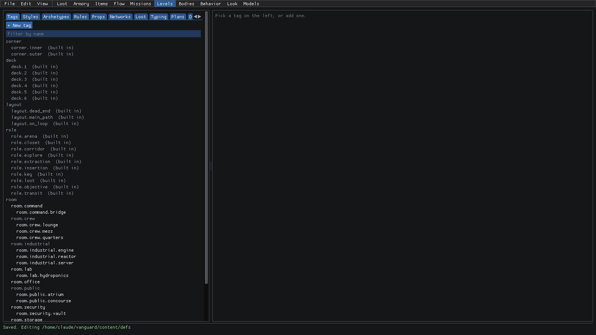
The layout:
- The tabs (top left): Tags, Styles, Archetypes, Rules, Props, Networks, Loot, Typing, Plans and Districts. There are more tabs than fit, so the bar scrolls along to keep the one you pick in view.
- The list (left): everything in the tab's file, with + New ... and Copy above it.
- The editor (right): the picked entry. A card at the top says in plain words what it does, then its previews, then its fields. Fields it can leave out show greyed out with set to add them.
Every change is in memory until you save. The bottom line counts the files not saved, Ctrl+S writes them and Ctrl+Z takes back the last change. File > Revert to saved throws all of it away.
Name a new kind of room, and keep rooms apart
Tags are how everything else in this mode says where. A rule places its props in rooms tagged room.office, an
assignment hides a stash in rooms tagged role.key, and so on. Tags nest: a rule asking for room.storage also
matches room.storage.cold. So you want cold stores? Here's the flow:
On the Tags tab, press + New tag. A tag called
new_tagis added totags.jsonand picked.Click its name, select it all (Ctrl+A) and type
room.storage.cold. Then click description and say what it means: it's for whoever writes the next rule with it.The list puts it under
room.storagestraight away, and the right side says what it's Nested under.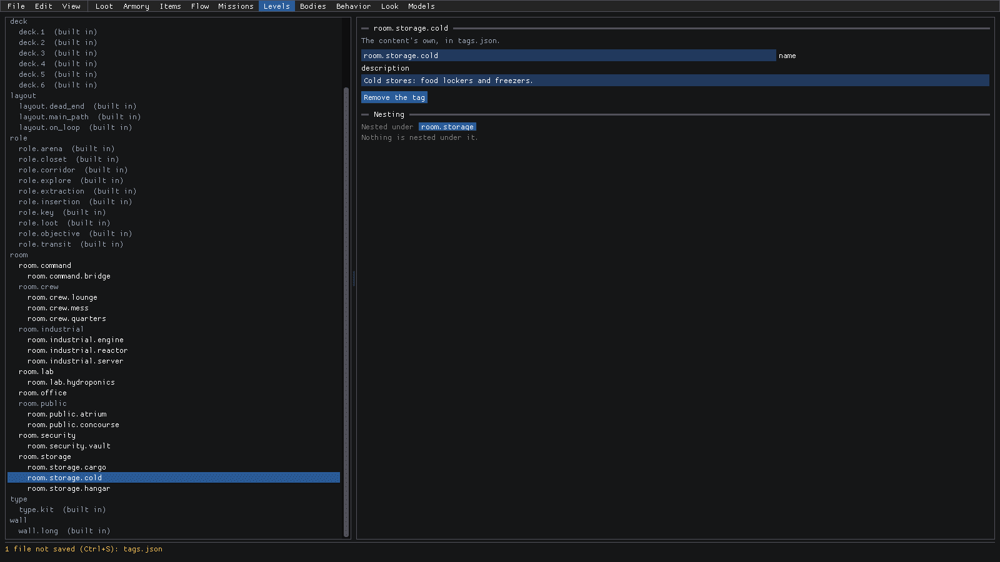
Click a dimmed tag in the list, like
room.crew. Nobody listed it: it's a tag because others are nested under it (an implied tag). It shows what's nested under it, and Describe it adds it totags.jsonso it can have a description too. The ones marked (built in) are set by the generator itself (role.*,layout.*,deck.*).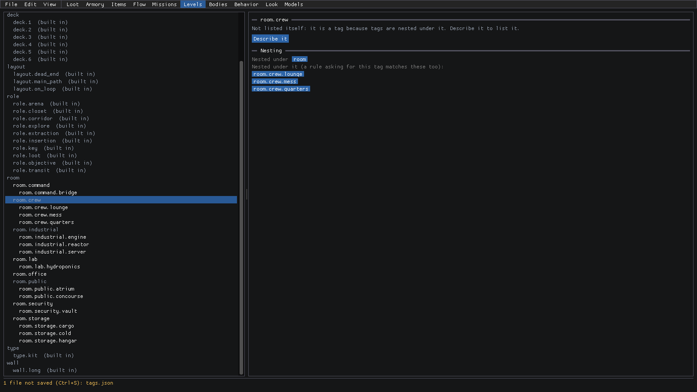
Tags are also how rooms get their types. Each room in a mission becomes one of the kit's own rooms or one of the mission's archetypes, and the Typing tab's rules say what can go where.
Open the Typing tab. At the top is the kit's own share (
0.70), then + count, + adjacent and + distance to add a rule of each kind, then the rules themselves.Click
offices_not_side_by_side. The card says what it asks for: "No room with any of room.office is joined to one with any of room.office." Below it are its two sides,aandb, each a set of tags.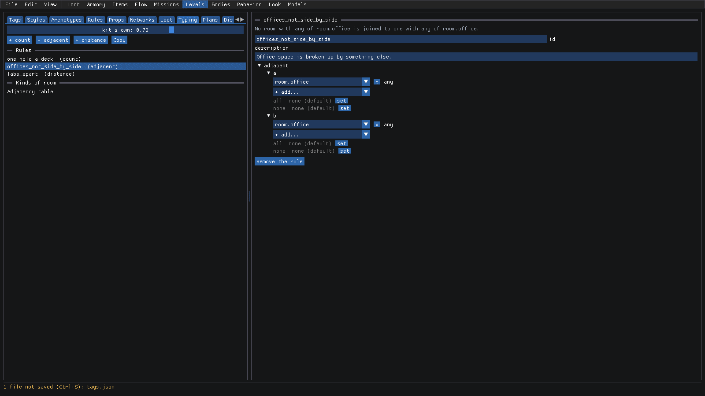
Now click Adjacency table. It's every archetype's tags (and
type.kit) against each other. Want crew quarters kept away from the reactor? Tick the cell where theroom.crew.quartersrow meets theroom.industrial.reactorcolumn. That's it! It writes an adjacency rule for you,apart_room_crew_quarters_room_industrial_reactor, and unticking takes it out again.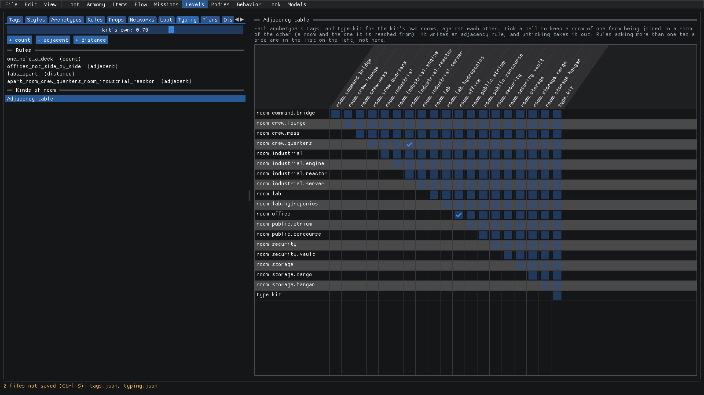
Ctrl+Z takes the tick back, as it did here.
Give rooms a new look
Who models the walls? Nobody! The generator works out a room's walls from its shape and builds them in the room's
surface style. A style only lists what's different from its base, which is another style, and ultimately
station.
Open the Styles tab and pick
industrial. On the right is the style as it builds: a stretch of a room's wall with a doorway, and a hall built in the style, seen down its length. deck and room pick which deck's and room role's colors the trims are drawn in.Below that are its base (
station), id, description and every part it changes: here thewall, thefloorand thehall(itsstructureis arches, its floor trim, and itsglow).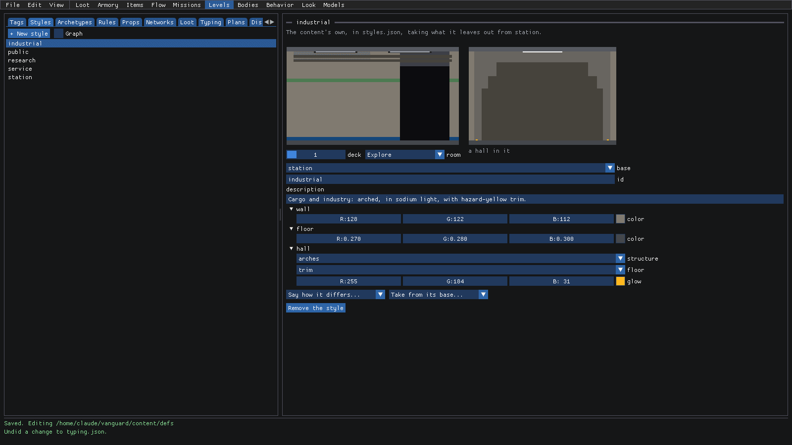
Drag the wall's R to the right and its G to the left. Both previews are redrawn in the new color as you go.
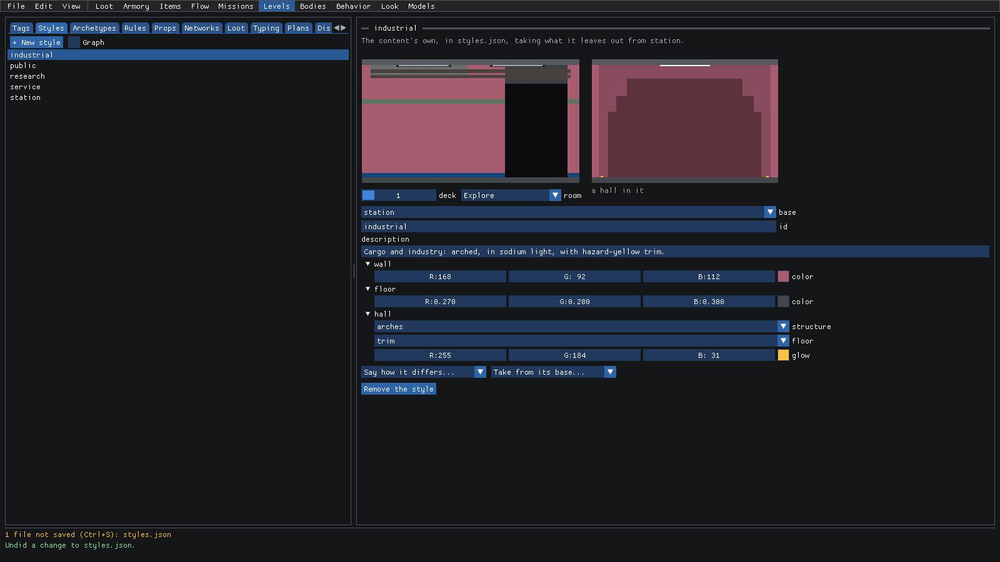
Want a part it currently takes from
station? Open Say how it differs... and pickstripe. The stripe is added just as the base has it (low,high,depth,shade,material, and its color following the room's role), so you can change it. Take from its base... removes a part again.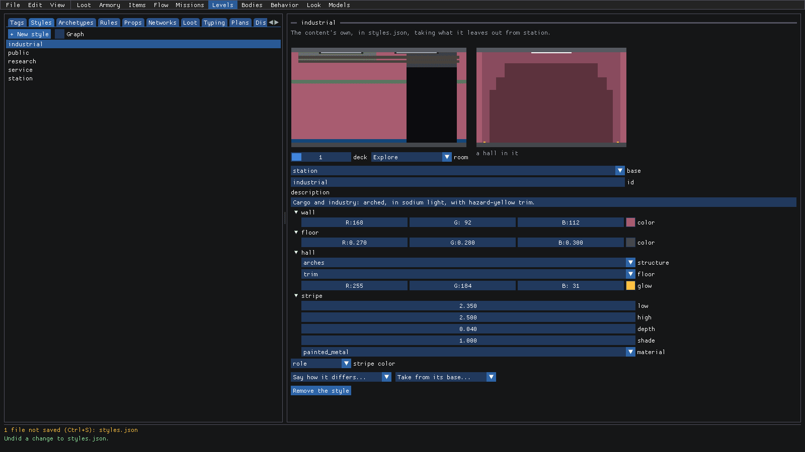
What if you go too far? Drag the stripe's high way up. The style goes red, with what's wrong right under its name ("stripe.high: 7.35 is outside 0 to 3.6"), and the previews say "As it last built". The bottom of the window says the same, in the game's own words. Press Ctrl+Z and it's fine again.
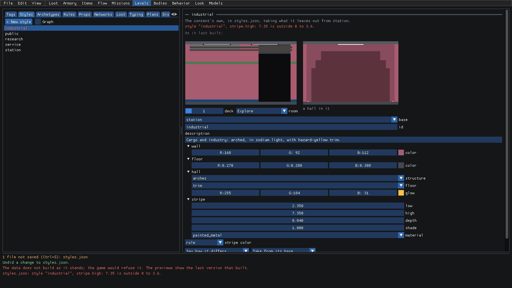
Tick Graph next to + New style to see the styles as a graph instead: each style with the parts it sets, wired to everything that's built in it on the right (the archetypes, and each mission's hall themes). Click a style to edit it.
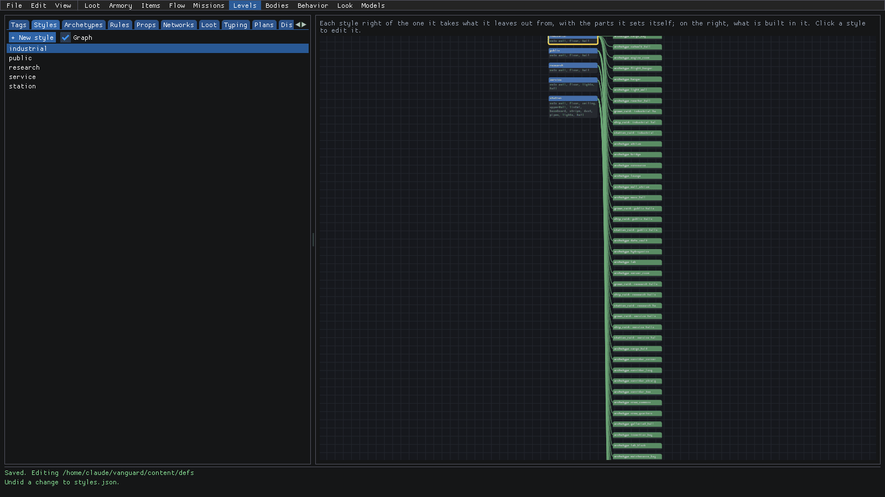
A style decides how a room looks, never where people and shots can go. Wall positions, thicknesses, doorway heights and the like aren't in it.
Build a two-story room
A room archetype is a kind of room the generator builds: its shape, tags, roles, style, furniture, and how many stories tall it is. Let's make the crew commons taller.
Open the Archetypes tab and pick
crew_commons (plus). At the top are six footprints its recipe makes from seeds (Reroll for others). Click one to build it below: from above, with its doorways in yellow, and on a turntable next to it. Drag the turntable to turn it and use the wheel to come nearer.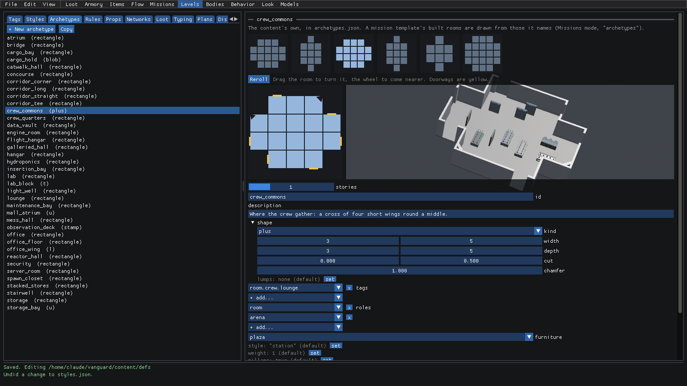
Its form has the shape (
plus, 3 to 5 cells across and deep), its tags, its roles, its furniture (plaza) and, greyed out, the style it takes by default. Press set next to style and you can pick another, likeindustrial.Drag the stories slider to
2. Uh oh! It goes red: "a tall room with a floor up it is 4 cells or more each way, for its stairs; this may be 3 by 3." The previews keep showing the room as it last built.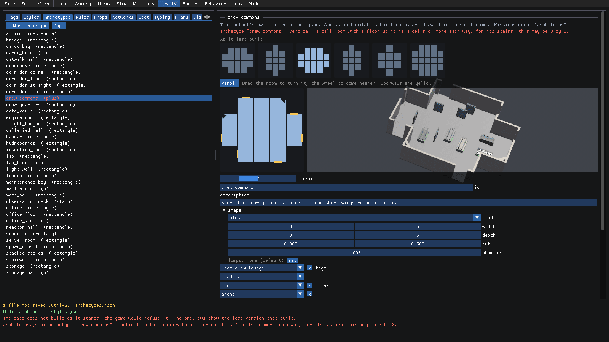
Fix what it says. Drag the smallest width and depth from 3 to 4. Now it builds: the plan shows the stairs, a story slider appears under it (on
groundhere), and the turntable shows the floor up above.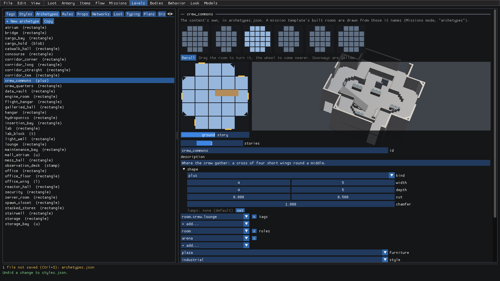
Happy with it? Ctrl+S. This was just a test, so here it went back with File > Revert to saved.
Furnish a mess hall
What goes in rooms is two tabs working together. Rules (rules.json) say what's placed where, and Props
(props.json) are the things they place.
Start on the rule:
--mode levels --select mess/tables, or open Rules and picktablesunder Furnishing: mess. The rules are split into each furnishing's rules (how a built room with that furnishing is furnished; archetypes name a furnishing) and then the level's own rules.The card says what it does in plain words: it places
mess_tableas near the middle as it fits, keeps 1.2 m clear round each, stands in the way (so it leaves every way through open), and is laid out together, "1 to 4 rows of 1 to 3, 0.4 m apart in a row, 2 m aisles between rows". Next to it is the table's footprint from above and from the side.Too cramped? Drag aisle to the right. The card follows: "3.85 m aisles between rows".
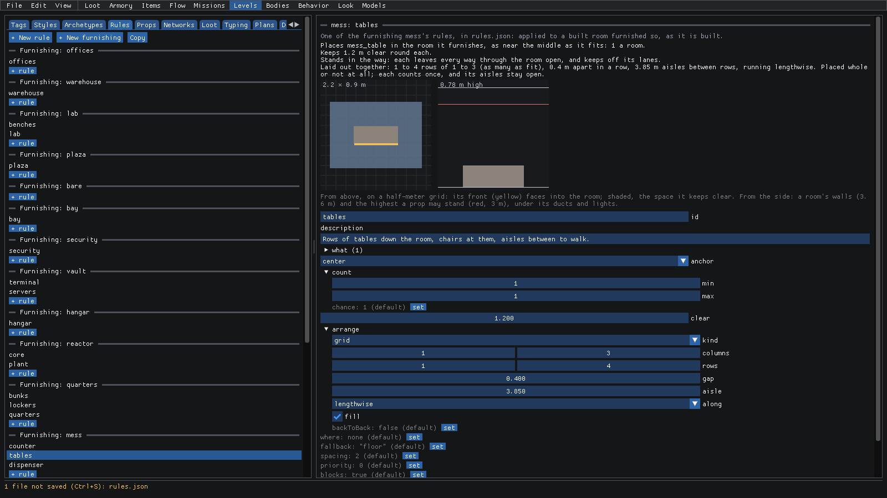
Press Ctrl+Z, and now open the Props tab and pick
mess_table. A furniture prop with a model spins on the stage, with its loot sockets and attach points marked: here 6 sockets for items on top (Top) and 6 places for other pieces (Seat, where the chairs go). Under it is the prop from above and from the side, which rule places it (mess/tables), and its form.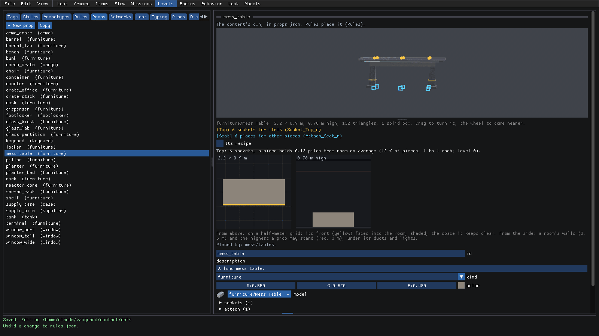
Open sockets and its group (
Top). That's the loot on the table: how many sockets get it (fill), thechanceit holds anything, and the table it rolls from (room, the room's own). The line above the footprint sums it up: "a piece holds 0.12 piles from room on average".Drag chance up. At 0.53, a table holds 0.53 piles on average. That's a well-stocked galley!
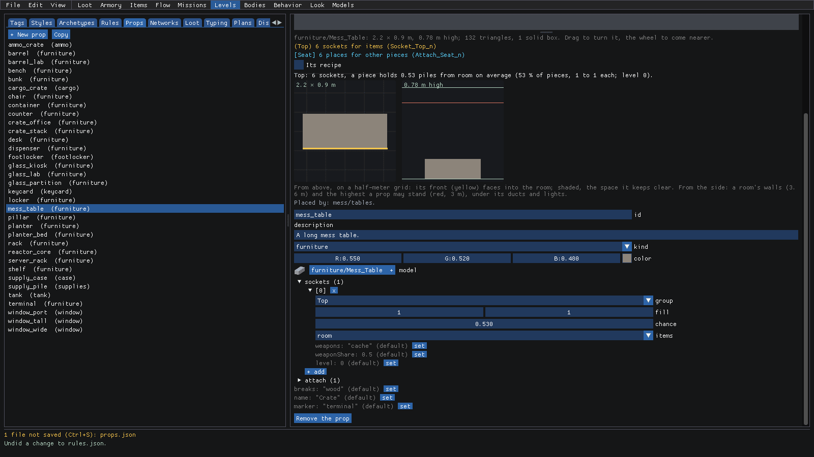
Route a pipe and hide the loot
Two of the smaller tabs, but both change a level a lot.
Networks are what connect parts of a level. reservoir_feed is the pipe the generator lays from a deep reservoir
to its outlet. So how do you tell a pipe where to go? You don't, exactly. You tell it what each way costs, and the
cheapest route wins.
Open Networks and pick
reservoir_feed. Under What its route pays is a slider for each way the route can run (along a wall, over a doorway, the ceiling's edge, standing off, across an open ceiling, a riser, through a wall, through a lintel, a service cell) and one for each bend.Don't want pipes strung across open ceilings? Drag Open ceiling up, here from 30 to 124. The sliders stop at 200; Ctrl-click one to type more.
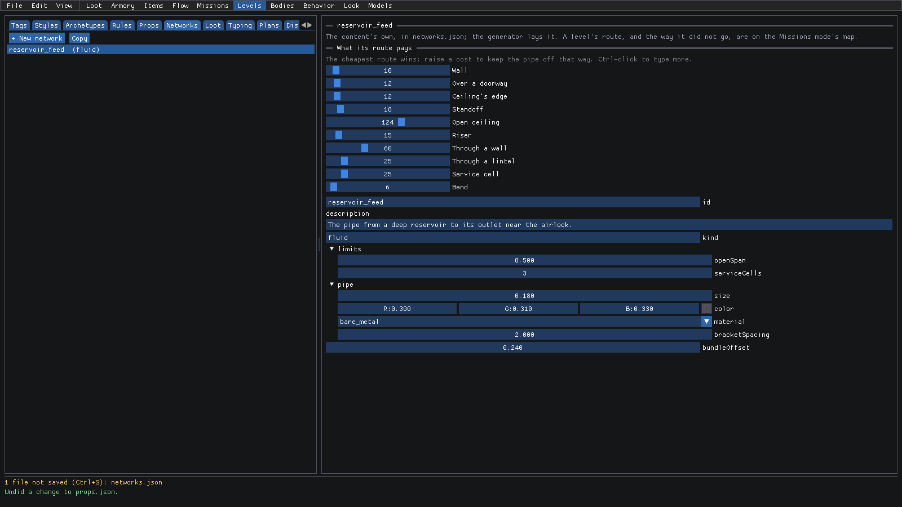
Below are its limits and the pipe itself (size, color, material, bracket spacing). A level's route, and the route it didn't take, are drawn on the Missions mode map.
Loot (loot.json) says where a level's loot goes: which rooms hold a cache, which may hide a stash, and the item
tables piles, footlockers, cases and cargo roll from.
Open Loot. On the left are the Assignments, in order, Each deck's stashes and every table a level's loot is rolled from. Every assignment that matches a room applies, and the first cache and the first of each table win, so the order matters (the arrows next to Copy are for moving the picked one).
Pick
stashes_key_rooms. The card says: "Applies to rooms with any of role.key. May hold a stash, weight 0.6, 0.25 more each soldier holding it (two at most), from the mission's stash table."Drag the stash's weight up, to 0.86 here, and the card follows. Keycard rooms are now likelier to hide a stash than the deck's other rooms.
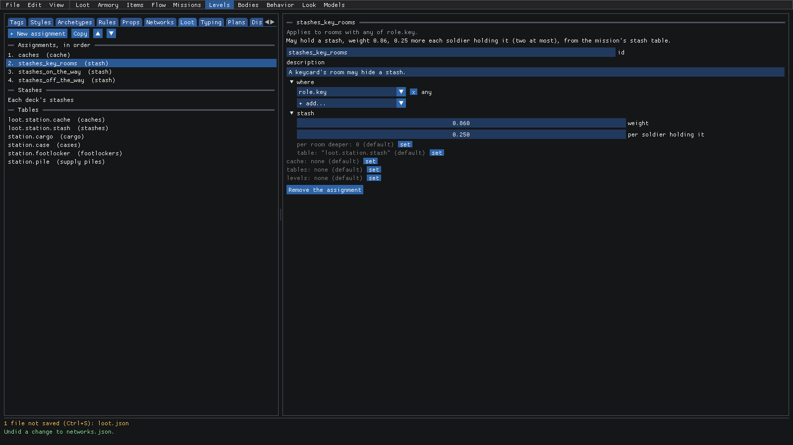
Pick
loot.station.stashunder Tables. It says what kind of table it is (a weapons table, edited in Loot mode) and who rolls from it: the stashes of all three missions.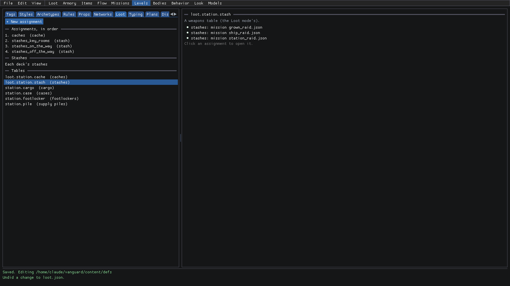
Draw a ship
The ship raids aren't grown room by room. They're laid out structure first, from a plan: the shape of the ship, the halls carved into it, and the bulkheads that cut it into sections, each section a district of rooms.
Start on a plan:
--mode levels --select frigate, or open Plans and pickfrigate. At the top are its skin (how its outside looks from the windows), its description, its decks and its stair cores.Under Its envelope are four seeds of it (Reroll for others), and one drawn big: seed 1 is 168 × 68 m, with 4 sections, 12 compartments and 16 pressure doors and hatches. The sections are tinted, the halls white, bulkheads red, pressure doors yellow and hatches orange. deck switches between the Main deck and the Crew deck.
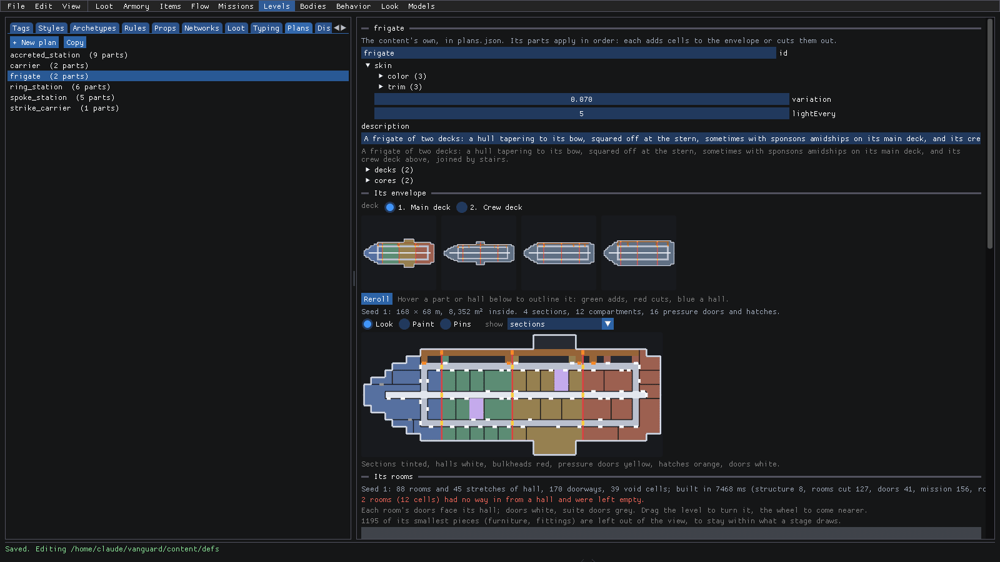
The show list draws a check over it. Pick the way through: in at the airlock, each gate's keycard, the hack, and out, in yellow. The others are the compartments, what could be lost to a breach, and rooms per corridor.
Now let's draw! Pick Paint instead of Look. The view widens so you can paint out past the hull, and paint into offers
a new mask (adds). Drag along the top of the hull to paint cells in (right-drag rubs them out).Your first stroke makes a new part,
part 3, a mask, and the list now saysfrigate (3 parts). Each stroke after that paints into it. Paint along the edge a few times, and there's a new strip of rooms along the frigate's flank: 8,672 m² inside now, up from 8,352.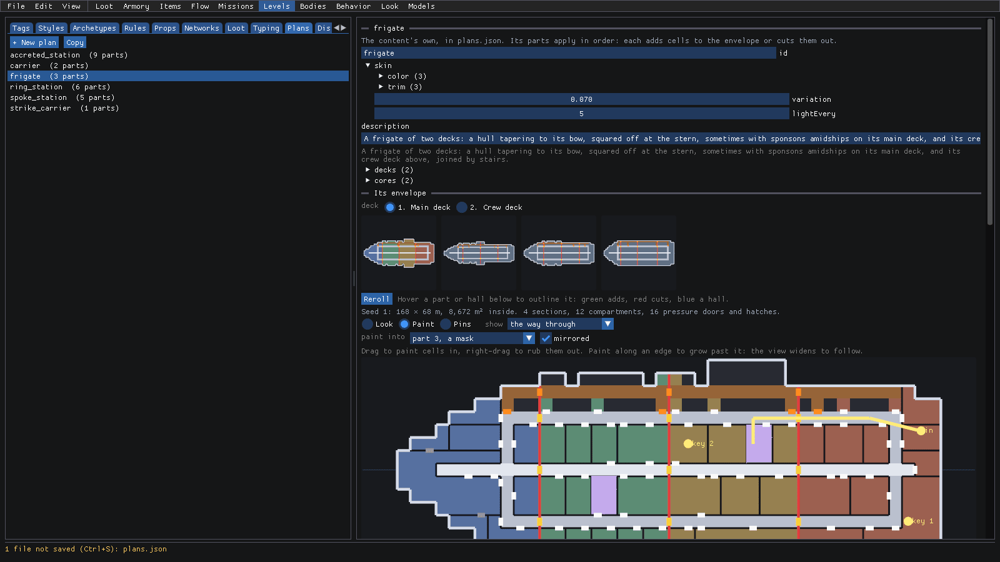
Scroll down to Its rooms. This is the whole level for that seed: 88 rooms and 45 stretches of hall, its doorways and void cells, and how long each stage took. Any problem is in red; here, "2 rooms (12 cells) had no way in from a hall and were left empty." Below, the level stands on a stage. Drag it to turn it and use the wheel to come nearer.
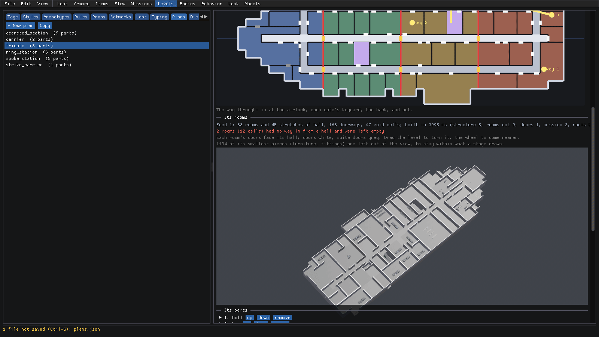
Under the stage are Its parts (here the hull, a box and your new mask, each with up, down and remove, and Add a part for every kind) and Its halls.
Which rooms go in a section comes from its district. Open Districts and pick
crew, then open rooms andcrew_quarters. A district has an anchor, the set piece its section is built round (amess_hall4 to 5 cells wide), and its rooms, each an archetype with how many cells it takes along its hall, a weight, whether it runs (several in a row, like cabins) and whether it's private.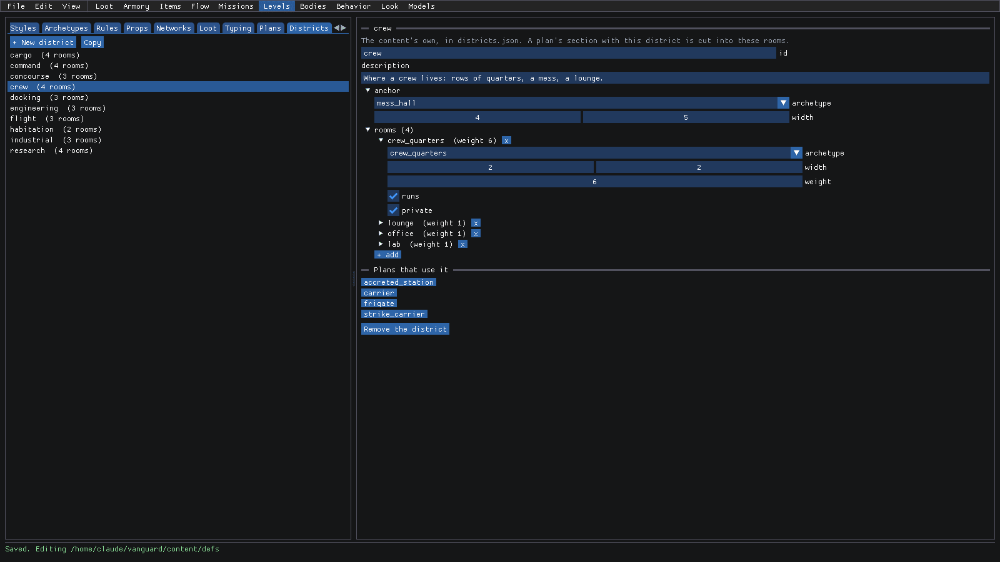
Plans that use it lists the plans whose sections are crew. Click
frigateto jump back to the plan.
Done drawing? Ctrl+S keeps your ship. Here it went back with File > Revert to saved.
A plan's picture, without the window
Want to check a plan without opening Studio at all, say on a build machine? Ask for a picture of it:
dotnet run --project src/LastFleet.Studio -- --mode levels --select frigate --seed 1 --plan-png frigate.png
It builds that seed, prints what it made ("frigate for seed 1: 168 × 68 m, 522 cells in 1 piece(s), 4 sections, 12
compartments, 88 rooms..."), lists its problems and exits. The picture is the plan's structure, one per deck: the
first in the file you named and the second next to it with _deck2 on the end.
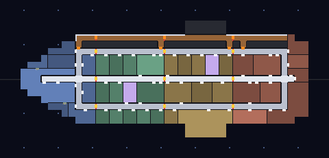
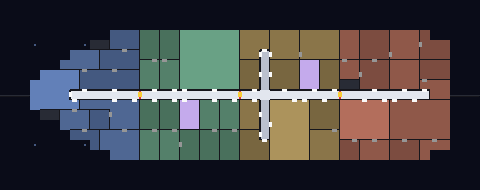
It exits with code 1 if the plan has a problem or its envelope is in more than one piece. This frigate does, with the same "2 rooms had no way in" as above, so it's a handy check to script.
Where to next
- The reference for this mode is Levels: what levels are made from, with a section for every tab.
- To see all of this in a generated level (a room's type and why, how each placement rule did, the pipe's route), see missions.md.
- The tables loot rolls from are edited in Loot and Items mode; flow.md shows how they connect.